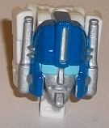
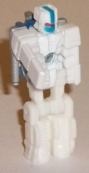
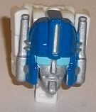
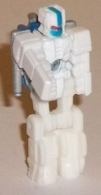
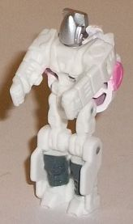
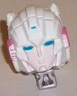
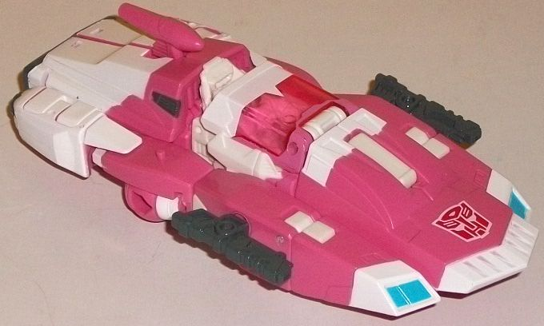
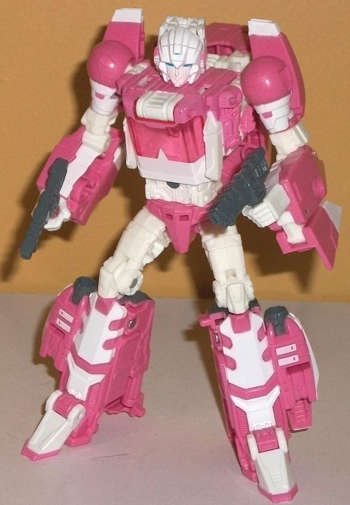

 
Size : Titan Master
Difficulty of Transformation : Very Easy
Color Scheme : White, moderately dark blue, and some light sky blue, silver, red, and moderately light blue
Individual Rating : 4.3
Allegiances
: Autobot
Price
: $25 (U.S.)
(NOTE: Because this is a repaint, this is
not a full-blown review. This mainly covers any changes made to the mold
and the color scheme, and merely compares it to Titans Return Blurr w/
Hyperfire. For a review on the mold itself, read the review of Titans Return
Blurr w/ Hyperfire
here
.)
 Ultra
Magnus (Titan Master)
Ultra
Magnus (Titan Master)


Size
: Titan Master
Difficulty of Transformation
: Very
Easy
Color Scheme
: White, moderately
dark blue, and some light sky blue, silver, red, and moderately light blue
Individual Rating
: 4.3
Ultra Magnus is the "bonus" of this set-- apparently there were originally going to be 4 $100 Titans Return sets, but for whatever reason the last two were (mostly) canned, with only the bonus Titan Master and deluxe carried over to individual store exclusives. Regardless, like the other "lone" Titan Masters, the core Titan Master body/head is made of painted diecast. Except for the head, this Titan Master uses the same mold as Titan Master Thunderwing , the latter itself a combination of a few different Titan Master molds. Regardless, the Titan Master's robot mode seems to be an homage to Ultra Magnus's "white Prime" inner robot, with the general colors of one. I.e., he's basically all white, with a bit of fairly light blue paint on his faceplate and the middle of his forehead, with some red paint for his visor. Unfortunately, the rest of the robot mode is entirely white, which makes him look a bit bland outside of the head. I DO like that-- even though the head design is re-used-- it's close enough to Optimus' head that painting it in inner robot Magnus-y colors makes it look like this is a mini white Optimus Prime. In head mode, the front face section is brand-new, with a very cartoon-accurate sculpt of Ultra Magnus, complete with the larger light blue eyes he had in said animated series. He's also got silver pipe-like antennae, a silver stripe down the rectangular design in the middle of his forehead, and a regular silver face. The rest of his new facesculpt is a moderately dark blue, and overall it's a pretty good color combo. That said, the white Titan Master arms and legs folded up behind the face really stick out more than on most Titan Masters' head modes, with the white coloration making them particularly obvious; this head mode only looks good from a frontal view.
 Arcee
w/ Leinad
Arcee
w/ Leinad


Size
: Deluxe
Difficulty of Transformation
: Medium
Color Scheme
: White, soft pink,
and some dark glossy gray, transparent pink, silver, pale pastel pink,
and moderately light blue
Individual Rating
: 9.3


Given that Arcee is
a remold of Blurr, Leinad ("Daniel" Witwicky backwards) is a remold of
Blurr's Titan Master Hyperfire. The molding for the robot mode for Leinad
is the same as Hyperfire's, with the exception of the head, which is now
a silver dome with a few rectangular bits on the side so that it can still
fit in Titan Master ports. This is definitely meant to call back to Daniel's
exosuit with the helmet up, and is a pretty cool nod while also being vague
enough where you can just make Leinad a mini-robot without any human inside
if you so wish in your head canon. Beyond the silver head, there's just
some dark glossy gray paint on the lower legs, and the rest of the mode
is white, so it's not something particularly eye-catching (though all the
tiny mold details CAN be seen easier in white plastic than in darker plastic).
In head mode, Leinad of course has a new headsculpt, which looks like a
slightly modernized version of Arcee's head-- it's fairly curved at the
sides, with some points on the inside of the "helmet" where it meets the
face, the beginning of pink "earmuffs" that sadly don't carry over to the
parts behind the face, and a small blue vent-like detail in the center
of her forehead. She also has a pretty "normal" face with a very light
pastel pink used on most of it, with some fairly light blue paint on the
eyes and a pretty neutral expression on her face. Although the top of the
arms do stick up a bit from behind Arcee's headsculpt and partially ruin
the curvature of it, given that the rest of her head is white along with
most of her helmet, it doesn't stick out
too
badly, especially for
a Titan Master head.
Titans Return Arcee
has a few major mold changes from Blurr beyond just the new Titan Master
heads. The toy's shoulder/upper arm pieces have been remolded to look more
like her G1 design, with rounder shoulders with small vehicle panels on
the back of them that are like miniature versions of the car sides that
went on her back on the G1 cartoon. The front of the car mode has also
been completely re-done, to fit her "softer" G1 car mode when compared
to a 'bot like Blurr. The sides of the front-- though still certainly angular--
aren't quite as long, and have visible blue headlights. The center portion
(which can come off her back in robot mode to form a shield-like weapon)
is a bit curvier near the back, with a white-rimmed piece on the front
(and a fairly large Autobot symbol) that also isn't as long as Blurr's
shield piece. The small antennae-like piece that flips out of the middle
of the back in car mode also looks more curvy and actually fits
Scourge's
head blaster pretty closely, oddly enough. Finally, the weapons are new,
as Arcee comes with two relatively small rifles which can fit in her hands,
in peg holes on her shield piece, or on the sides of her vehicle mode.
Her color scheme is nearly all white and a soft pink, which of course is
accurate to how she's traditionally been colored and fits Arcee to a tee,
without being SO light and pastel it comes across as "overly girly" for
a toyline aimed primarily at guys. Although pink is near the bottom of
my general color list in terms of likability, for what it is it's good,
and the two colors contrast quite well. They're also both broken up pretty
well without too large an area of just one color, so she doesn't look boring
despite having a mostly two-toned color scheme. There's a bit of transparent
pink used for her cockpit window as well, which is a bit bolder than her
softer pink and complements/contrasts against it nicely. Some glossy dark
gray paint is also used on her guns, thrusters, and a few other minor parts
to give her a darker color, and is also used in the middle of her stomach
to give her a "belly button" of sorts. Given the clever usage of paint
apps on places like her shoulders, lower legs, and chest, it makes it look
like this design was made almost for Arcee more than Blurr, and fits her
very well.
The Titans Return Arcee/Ultra
Magnus set is an easy sell for anyone who's remotely a fan of the fembot.
The remolding made to the Blurr mold makes it fit Arcee far more than I
ever thought it could, and given the combination of that and her color
scheme, she pulls it off quite well. Ultra Magnus is kind of a weird extra,
so I wouldn't get it FOR him, but he's not bad for a Titan Master either.
My favorite toy of a "modernized" G1 Arcee. Highly recommended, as long
as you don't mind pink.
Reviews by Beastbot